**Ruei-Che Chang's Final Report**
Student name: Ruei-Che Chang
(##) Part 1: Motivation
My motivation is from the movie I'Robot, where one robot had his own consciousness and hacked into the system to control other robots. While today the robot is under development and the automation should be predefined by human programs. But in nowadays artificial intelligence is more and more popular, so I think maybe one day the robot can break their outer limits, which they will not be controlled by human beings.
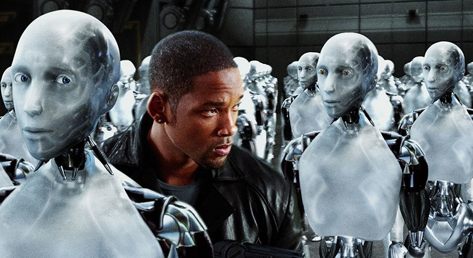
(##) Part 2: Depth of View
My implementation follows the Peter Shirley's book, in which I have an offset (randomInUnitDisk() * aperture_size) to the orgin and the direction of camera. And then adjust the focal distance in json file so that camera can focus on different distance.
Reference: camera.h
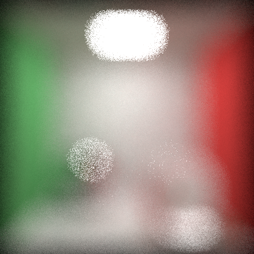
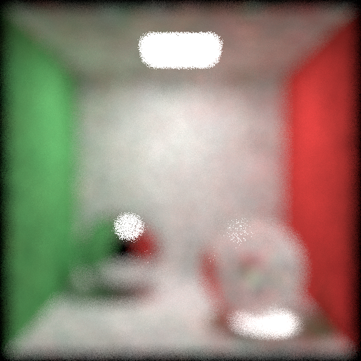
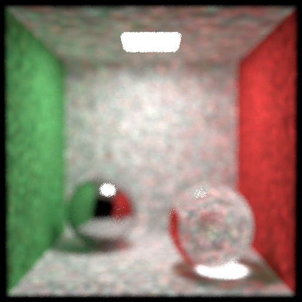
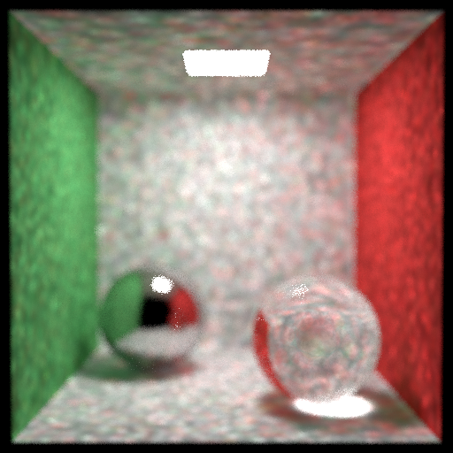
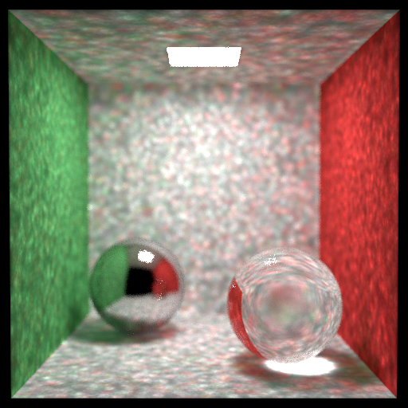
(##) Part 3: Environmental Map
For the environmental mapping, I just compute the camera ray that does not intersect with the scene and then transform that ray direction form xyz-cooordinate to uv-coordinate and then compute the position of pixel on the picture. But the resolution is not as my imagination, and that's the reason I did not put this feature in my scene.
Reference: scene.h
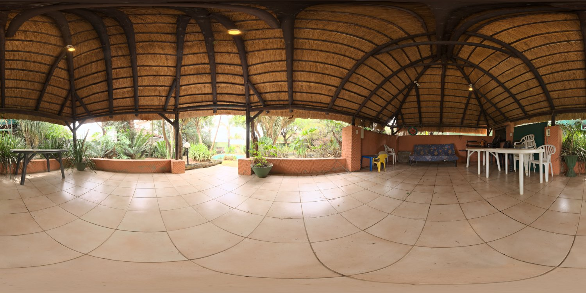
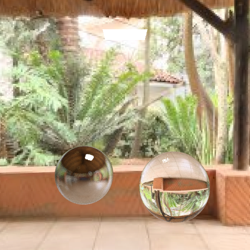
(##) Part 4: Normal mapping
For the normal mapping, I followed the instructionos on this website (https://blog.csdn.net/zjull/article/details/12289413). I first compute the gradient of the picture and get the uv gradient. And then I use the onb in previous assignment to get the tangent vector. And update the normal vector using equation (new normal = original_normal + Tangent*u_gradient + Binormal*v_gradient) when intersecting with the quad.
Reference: texture.h, texture.cpp
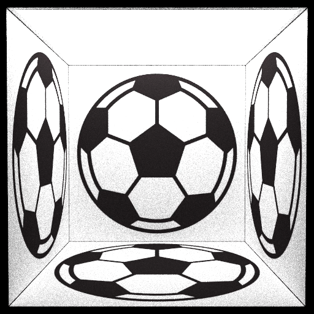
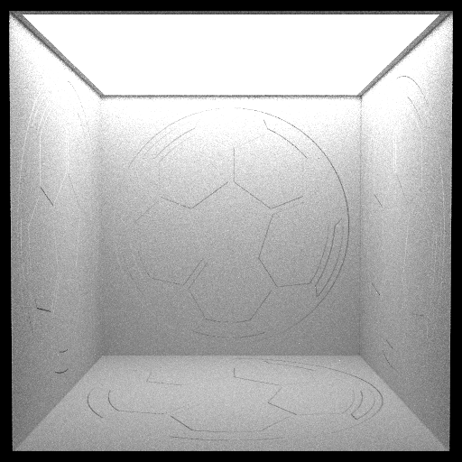
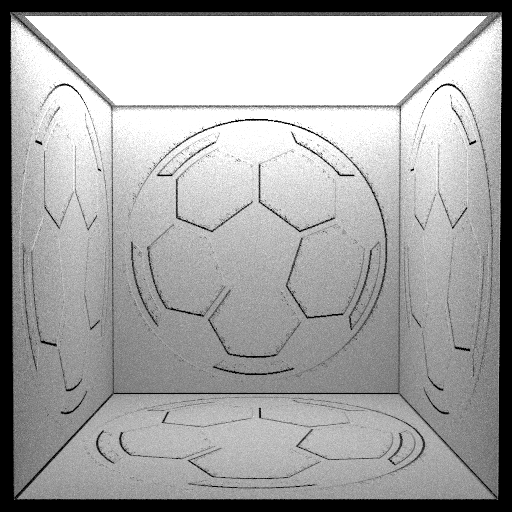
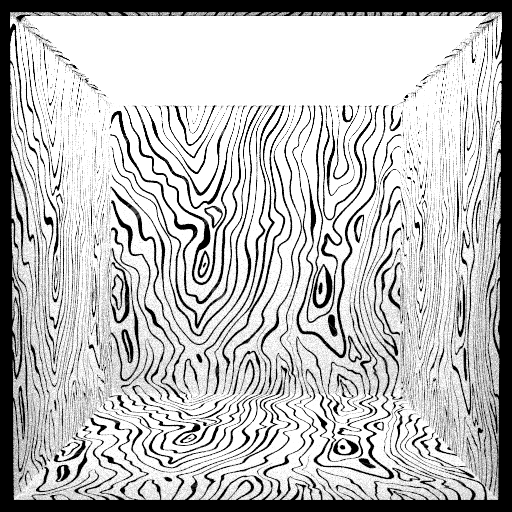
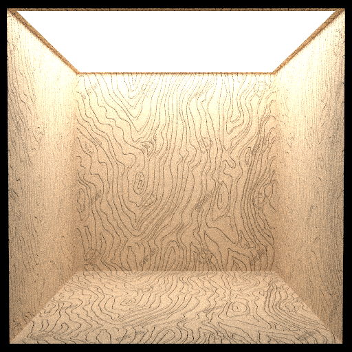
(##) Part 5: Photon Mapping
For the photon mapping, I follow the slides instructions and the following pictures are rendered with different nearest k points to the hit point.
Reference: integrator.h, integrator.cpp
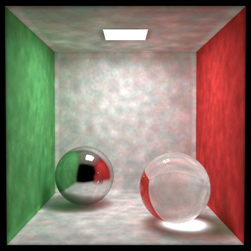
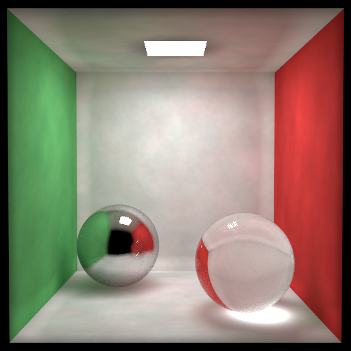
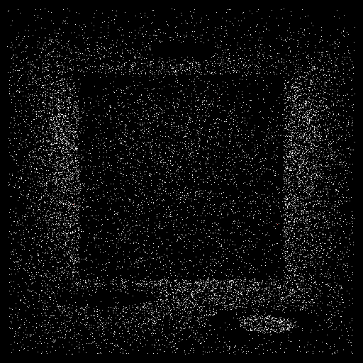
However, I think my photon mapping has bug since the brightness of photon mapping is obviously stronger than path tracing.
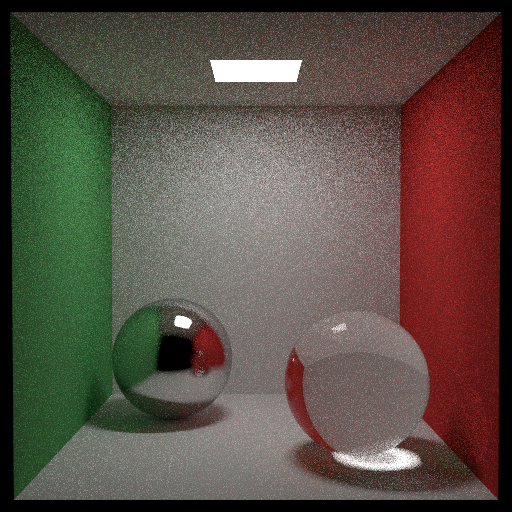
So I test in another way using two glass sphere with ior=1.0. The spheres are suppoosed to be invisible. However, the result is not as expected.
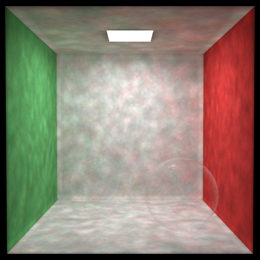
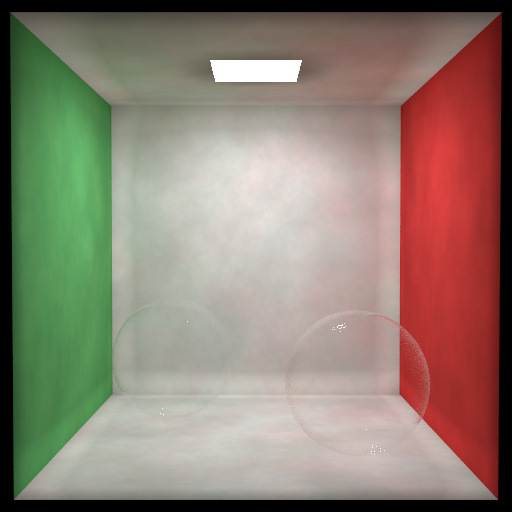
I also have a bug hindered me for three days, which is that I cannot store the photons more than around twenty thousands. The caustic in the picture is also wrong. And I also found that for the last tracePhoton loop, the ray kept hitting on the specular surface so that I suspected that the ray was trapped in the glass sphere. So I removed the glass and use metal instead and then I can store any number of photons. To deal with this problem, I finally set the number of maximum bounce (e.g. 100) to quit the ray tracing if keeping hitting the specular surface.
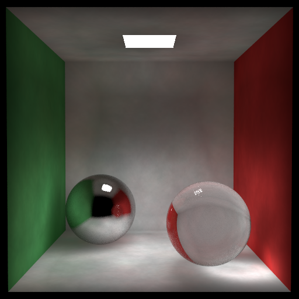
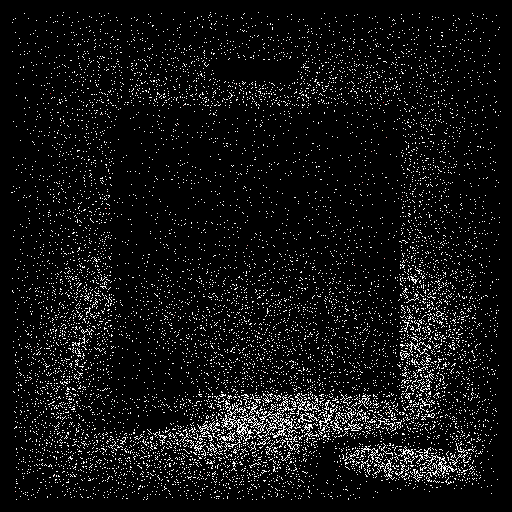
(##) Part 6: Final Image
The integrator is the above-mentioned photon mapping with the 50 sample images. Each image took me around 1.5hr on my laptop (Macbook Pro 2.3 GHz Quad-Core Intel Core i5, 16 GB 2133 MHz LPDDR3). Additionally, when using the raytrace function in dirt, the progress will stop in 82%, which make me think that there is a pixel goes wrong. Hence, instead of shooting numbers of ray to in one pixel and average the color, I shoot only one ray for each pixel and get image first, and finally sum up the images and average the color.
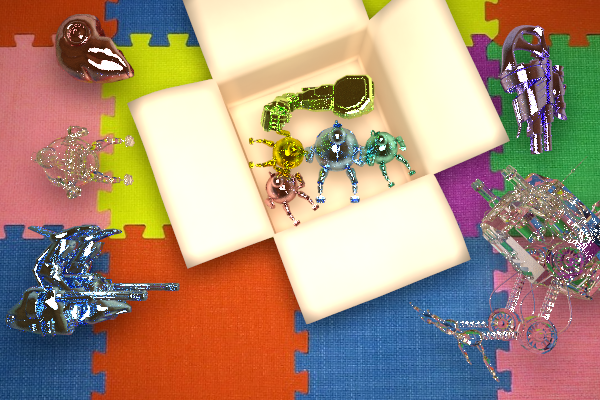
I also tried to implement the robot army like the motivation picutre but it took so much time to load models, so I just chose implement the above image as final project.